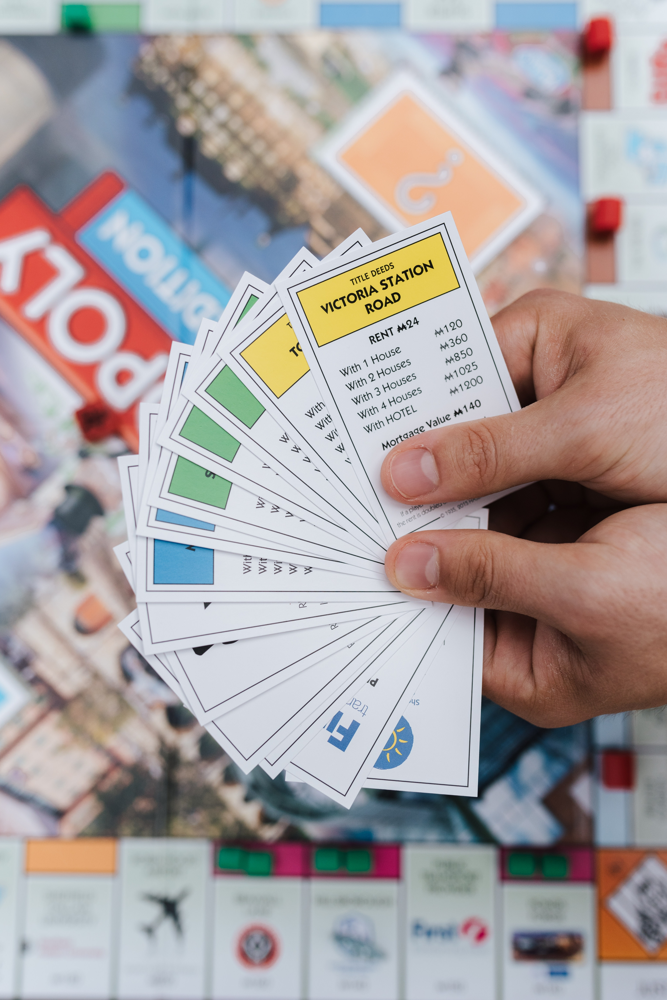
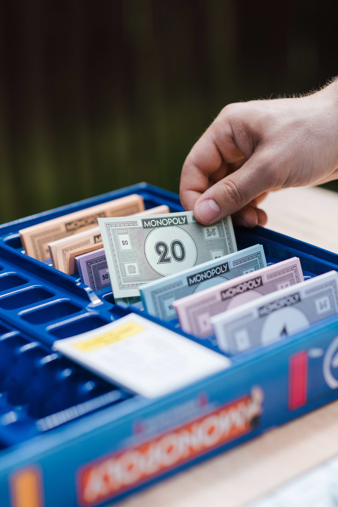
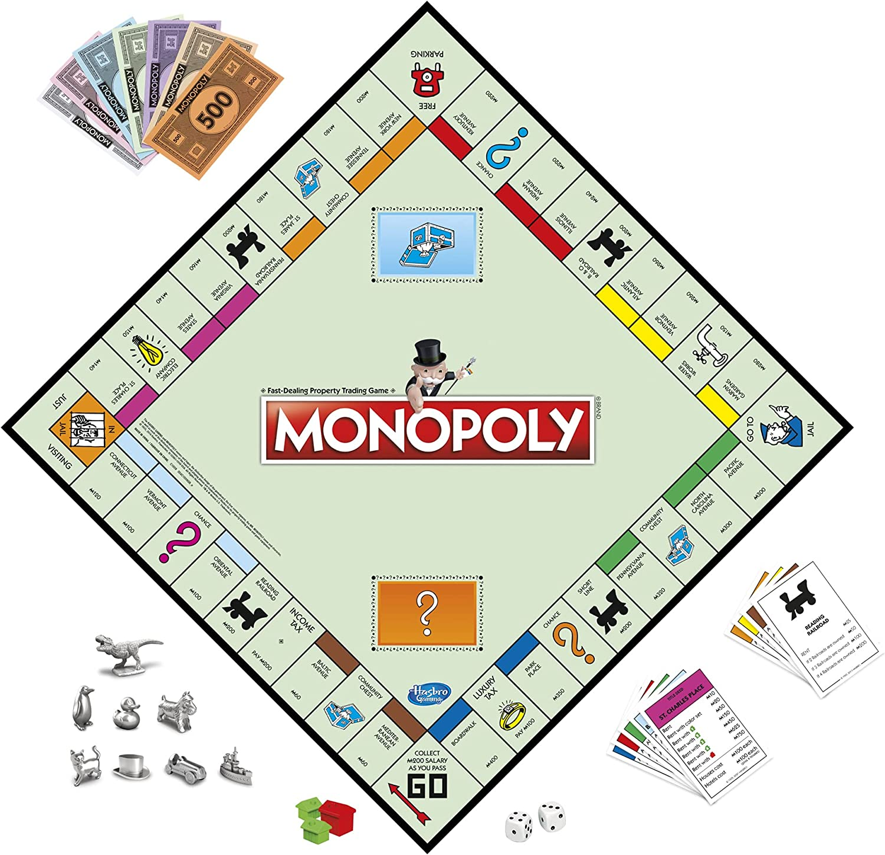
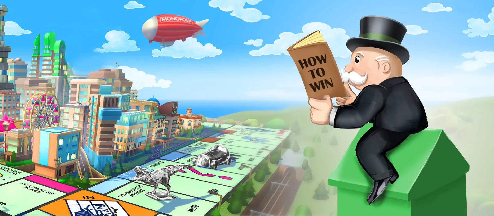

Monopoly Information
History of the Game
Monopoly was first created in 1903 by a woman named Elizabeth Magie. It was called "The Landlord's Game" and was intended to teach people about the problems with monopolies and how they lead to inequality. The game was later rebranded and sold to Parker Brothers in 1935, and it quickly became one of the most popular board games in the world.
Rules of the Game
Monopoly is a game where players move around a board buying and selling properties, and collecting rent from other players who land on their properties. The game is won by bankrupting the other players and owning the most valuable properties on the board. The rules of the game can be a bit complicated, but they can be found in the official rulebook that comes with the game.
Want to more about rules
Rules PDFTips and Strategies for Winning
- Buy properties as soon as possible, especially the ones that are landed on most frequently.
- Try to get a monopoly on a color group, as this will allow you to charge higher rent and make it harder for your opponents to get a foothold on the board. 
- Build houses and hotels on your properties as soon as you can afford to do so, as this will increase the amount of rent you can collect. 
- Try to negotiate trades with other players that will give you a better position on the board. 
- Be careful not to overextend yourself financially, as landing on other players' properties can be expensive. 